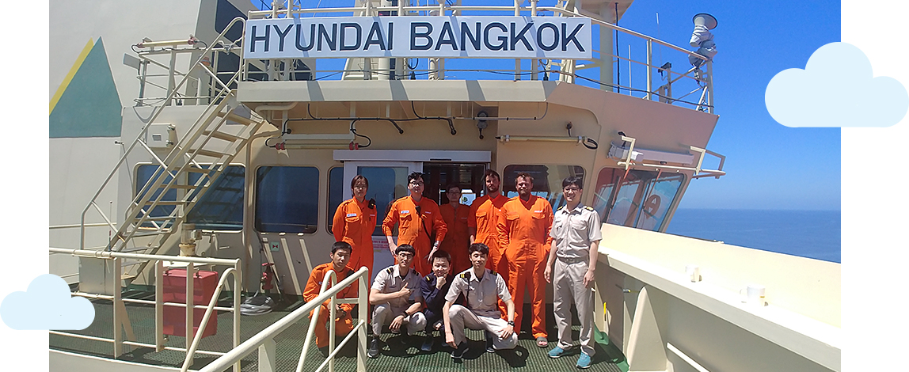
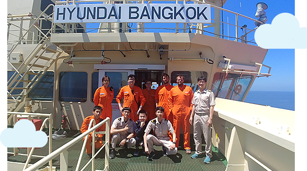
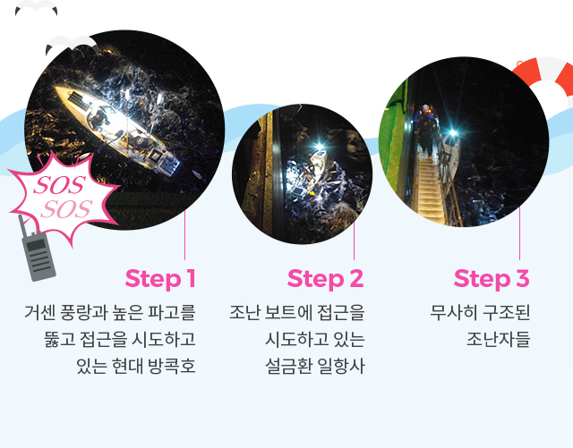

와 제 롤모델이 잡스에요!!! 아이폰 첫 출시되고 나서부터 계속 아이폰 쓰고 있는데 잡스가 너무 그리워요ㅠㅠ 지금은 돈만 벌려고 하는 것 같아서 디자인 발전도 없고ㅠㅠ와 제 롤모델이 잡스에요!!! 아이폰 첫 출시되고 나서부터 계속 아이폰 쓰고 있는데 잡스가 너무 그리워요ㅠㅠ 지금은 돈만 벌려고 하는 것 같아서 디자인 발전도 없고ㅠㅠ와 제 롤모델이 잡스에요!!! 아이폰 첫 출시되고 나서부터 계속 아이폰 쓰고 있는데 잡스가 너무 그리워요ㅠㅠ 지금은 돈만 벌려고 하는 것 같아서 디자인 발전도 없고ㅠㅠ와 제 롤모델이 잡스에요!!! 아이폰 첫 출시되고 나서부터 계속 아이폰 쓰고 있는데 잡스가 너무 그리워요ㅠㅠ 지금은 돈만 벌려고 하는 것 같아서 디자인 발전도 없고ㅠㅠ와 제 롤모델이 잡스에요!!! 아이폰 첫 출시되고 나서부터 계속 아이폰 쓰고 있는데 잡스가 너무 그리워요ㅠㅠ 지금은 돈만 벌려고 하는 것 같아서 디자인 발전도 없고ㅠㅠ
핫이슈
‘현대 방콕호’, 태평양서 美 조난자 구조
바다의 사나이,
그들은 용감했다
지난 6월 10일 컨테이너 화물을 싣고 미국 LA로 향하던 ‘현대 방콕호’에 긴급 무전이 타전됐다. 현지 시각으로 저녁 8시쯤 ‘북북서 9마일(약 14미터)’ 지점에서 미국인 2명이 탄 보트가 표류해 난파 직전의 급박한 상황이라는 미국 해양경비대(USCG)의 무전이었다. 이에 현대 방콕호는 긴박하게 뱃머리를 돌려 구조 활동에 나섰고, ‘SOS’를 수신한 지 73분 만에 2명의 미국인 조난자를 무사히 구조했다. <바다소리>가 당시 현대 방콕호에서 구조 작전을 펼친 설금환 일항사와의 일문일답 시간을 가졌다.
글·사진
설금환 일항사 (현대 방콕호)
구조 당시의 상황을 조금 더 자세하게 설명해주세요.
구조 당시 선박자동식별장치(AIS)에 조난자 위치가 표시되어 조난 선박을 쉽게 발견할 수 있었습니다. 하지만 시속 28노트의 비바람이 몰아치고, 3미터가 넘는 파고로 선박이 롤링(Rolling)하는 상태였어요.
여러가지 악조건 때문에 조난 보트로의 접근이 쉽지 않았습니다. 게다가 인명구조용 보트를 수차례 내리려 했으나 거센 풍랑과 높은 파도 때문에 포기할 수밖에 없었죠.
그래서 고심 끝에 내린 결론이 몸에 밧줄을 묶고 갱웨이(외벽 계단)를 딛고 조난 보트에 접근하기로 한 것입니다.
우여곡절 끝에 조난 보트에 접근하게 되면서 예인줄(Towing Line)을 조난 보트에 전달해 조난자가 선박에서 건넨 예인줄을 조난 선박과 연결할 수 있었습니다.
조난 보트의 길이가 7미터밖에 되지 않아 놀이기구 바이킹을 타는 것처럼 심하게 흔들리는 상태였기 때문에
더욱더 신중을 기해야했습니다. 구조 시 선박의 롤링으로 인하여 조난 보트가 갱웨이와 벌어지는 등 아찔한 상황들이 연출되긴 했지만, 결과적으로 무사히 구조할 수 있어 다행이라고 생각합니다.


구조된 조난자 2명(뒷줄 왼쪽에서 네 번째, 다섯 번째)이 ‘현대 방콕호’에서 하선하기 직전에
설금환 일항사(뒷줄 왼쪽에서 두 번째)을 비롯한 선원들과 기념 촬영을 하고 있다.
위험을 무릅쓰고 인명구조에 나섰는데, 당시 어떤 생각을 하셨는지 궁금합니다.
그때는 어떻게 해서든 서둘러서 구조를 마쳐야겠다는 생각밖에 없었습니다. 다들 처음 겪는 상황에 당황하기도 했지만, 조난자들이 매우 힘들어하는 상황을 본 후 구조 작업을 진행했기 때문에 한시라도 빨리 구조해야 된다는 생각뿐이었죠.
인명구조를 무사히 할 수 있었던 이유는 무엇인지 말씀해주세요.
모든 승무원들이 자신의 맡은 직무에 적극적으로 임해주었기 때문에 가능했습니다. 평소 받았던 안전 교육도 중요하겠지만, 승무원들의 경험으로 작업이 순조롭게 진행되었다고 생각합니다. 조난 선박을 본선에 접근할 수 있도록 라인을 조정했던 것은 통상 선박이 수에즈 운하 통과 전 예인선을 본선에 격납하기 위해 사용한 방법과 유사했습니다. 대부분의 승무원들이 수에즈 운하 통과 경험이 있었기에 작업을 쉽게 이해했습니다.

구조 후 조난자들과의 에피소드가 궁금합니다.
하루도 되지 않는 짧은 시간이지만, 선박에서 승무원이 아닌 일반인, 특히 조난자들과 함께하는 시간이기에 조금 더 특별했습니다. 자동혈압측정기로 혈압을 측정하려던 중 조난자 한 분의 팔뚝이 너무 굵어 혈압을 측정하기가 조금 어려웠는데요. 혈압측정기가 오작동하여 혈압이 떨어지고 있는 화면을 본 조난자가 “I’m going to die”라며 툭 던진 농담에 웃음이 터졌는데, 그때부터 분위기가 조금씩 편해진 것 같아요. 또 조난자들에게 본선에서 가장 큰 사이즈의 작업복을 지급해 주었는데, 조난자 2명 모두 덩치가 커서 도움을 받아 겨우 입은 모습에 또 한 번 웃음이 터진 것이 기억에 남습니다. 마지막으로 그들이 무사히 가족들에게 돌아가는 모습을 볼 수 있게 되어 정말 뿌듯했습니다.
-
최고예요
322
-
좋아요
322
-
슬퍼요
322
-
그저 그래요
322
-
화나요
322